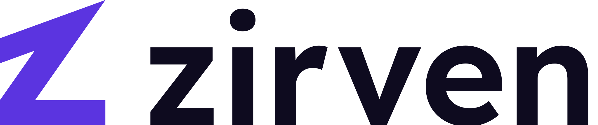
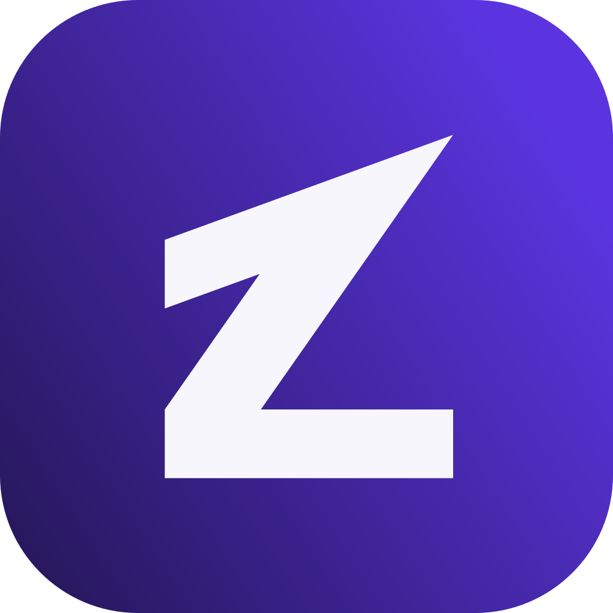
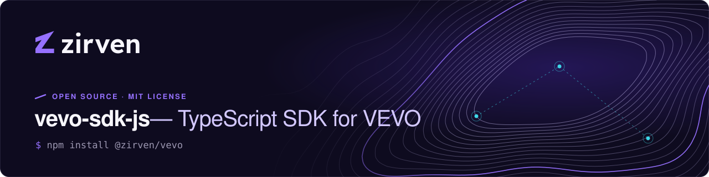
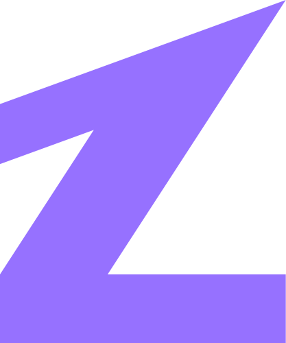

vevo-sdk-jsPublic
Official TypeScript SDK for the VEVO API: workspaces, workflows, the assistant and webhooks.
TypeScript1.4k112

Zirven V2.1 · Applications
zirvenBuilding intelligent digital products. Software · SaaS · AI
Official TypeScript SDK for the VEVO API: workspaces, workflows, the assistant and webhooks.
Python client for the VEVO API, with async support, typed models and retries built in.
Zirven design tokens: colour, type, space and motion, generated for CSS, iOS and Android.
Evaluation harness for production AI features.
Terraform modules for the Zirven platform: networking, data stores and observability.
Organization profile, contribution guide, security policy and community health files.
Official TypeScript SDK for the VEVO API.
The zirven command line: sign in, run workflows and deploy from your terminal.

The official TypeScript SDK for VEVO, the AI-powered business platform by Zirven. Typed clients for workspaces, workflows, webhooks and the assistant. Works in Node.js 18+, Deno, Bun and edge runtimes.
$ npm install @zirven/vevo
import { Vevo } from "@zirven/vevo"; const vevo = new Vevo({ apiKey: process.env.VEVO_API_KEY }); // Answers come back with the sources they used const answer = await vevo.assistant.ask({ workspace: "operations", question: "Which suppliers missed delivery targets last month?", }); console.log(answer.text, answer.sources.length); // → "Three of 41 suppliers…" 3 // Actions that change data wait for approval const run = await vevo.workflows.run("order_intake", { orderId: "SO-20481" });
/examplesSECURITY.md, never a public issue

github.com/zirvenEvaluation harness for production AI features.
Developer surfaces in dark mode on generic code-host chrome: organization avatar from the app icon, bio “Building intelligent digital products. Software · SaaS · AI”, pinned repositories with brand-mapped language colours. The README banner is a self-contained 1280 × 320 SVG with embedded logo paths; the CLI uses the micro symbol and JetBrains Mono.